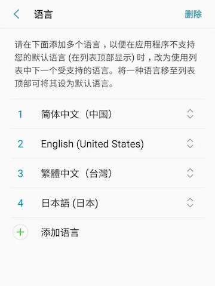

13.1 让App支持多语言
13.1.1 简介
如果我们的应用要支持多种语言，那么我们需要“国际化”它。这意味着我们在开发时需要为应用程序支持的每种语言环境设置“本地化”的一些值，如文本和布局。Flutter SDK已经提供了一些组件和类来帮助我们实现国际化，下面我们来介绍一下Flutter中实现国际化的步骤。
接下来我们以MaterialApp类为入口的应用来说明如何支持国际化。
大多数应用程序都是通过
MaterialApp为入口，但根据低级别的WidgetsApp类为入口编写的应用程序也可以使用相同的类和逻辑进行国际化。MaterialApp实际上也是WidgetsApp的一个包装。
注意，“本地化的值和资源”是指我们针对不同语言准备的不同资源，这些资源一般是指文案（字符串），当然也会有一些其他的资源会根据不同语言地区而不同，比如我们需要显示一个APP上架地的国旗图片，那么不同Locale区域我们就需要提供不同的国旗图片。
13.1.2 支持国际化
默认情况下，Flutter SDK中的组件仅提供美国英语本地化资源（主要是文本）。要添加对其他语言的支持，应用程序须添加一个名为“flutter_localizations”的包依赖，然后还需要在MaterialApp中进行一些配置。 要使用flutter_localizations包，首先需要添加依赖到pubspec.yaml文件中：
dependencies:
flutter:
sdk: flutter
flutter_localizations:
sdk: flutter
接下来，下载flutter_localizations库，然后指定MaterialApp的localizationsDelegates和supportedLocales：
import 'package:flutter_localizations/flutter_localizations.dart';
MaterialApp(
localizationsDelegates: [
// 本地化的代理类
GlobalMaterialLocalizations.delegate,
GlobalWidgetsLocalizations.delegate,
],
supportedLocales: [
const Locale('en', 'US'), // 美国英语
const Locale('zh', 'CN'), // 中文简体
//其他Locales
],
// ...
)
与
MaterialApp类为入口的应用不同, 对基于WidgetsApp类为入口的应用程序进行国际化时,不需要GlobalMaterialLocalizations.delegate。
localizationsDelegates列表中的元素是生成本地化值集合的工厂类。GlobalMaterialLocalizations.delegate 为Material 组件库提供的本地化的字符串和其他值，它可以使Material 组件支持多语言。 GlobalWidgetsLocalizations.delegate定义组件默认的文本方向，从左到右或从右到左，这是因为有些语言的阅读习惯并不是从左到右，比如如阿拉伯语就是从右向左的。
supportedLocales也接收一个Locale数组，表示我们的应用支持的语言列表，在本例中我们的应用只支持美国英语和中文简体两种语言。
13.1.3 获取当前区域Locale
Locale类是用来标识用户的语言环境的，它包括语言和国家两个标志如：
const Locale('zh', 'CN') // 中文简体
我们始终可以通过以下方式来获取应用的当前区域Locale：
Locale myLocale = Localizations.localeOf(context);
Localizations 组件一般位于widget树中其他业务组件的顶部，它的作用是定义区域Locale以及设置子树依赖的本地化资源。 如果系统的语言环境发生变化，则会使用对应语言的本地化资源。
13.1.4 监听系统语言切换
当我们更改系统语言设置时，APP中的Localizations组件会重新构建，Localizations.localeOf(context) 获取的Locale就会更新，最终界面会重新build达到切换语言的效果。但是这个过程是隐式完成的，我们并没有主动去监听系统语言切换，但是有时我们需要在系统语言发生改变时做一些事，比如系统语言切换为一种我们APP不支持的语言时，我们需要设置一个默认的语言，这时我们就需要监听locale改变事件。
我们可以通过localeResolutionCallback或localeListResolutionCallback回调来监听locale改变的事件，我们先看看localeResolutionCallback的回调函数签名：
Locale Function(Locale locale, Iterable<Locale> supportedLocales)
-
参数
locale的值为当前的当前的系统语言设置，当应用启动时或用户动态改变系统语言设置时此locale即为系统的当前locale。当开发者手动指定APP的locale时，那么此locale参数代表开发者指定的locale，此时将忽略系统locale如：MaterialApp( ... locale: const Locale('en', 'US'), //手动指定locale ... )上面的例子中手动指定了应用locale为美国英语，指定后即使设备当前语言是中文简体，应用中的locale也依然是美国英语。如果
locale为null，则表示Flutter未能获取到设备的Locale信息，所以我们在使用locale之前一定要先判空。 -
supportedLocales为当前应用支持的locale列表，是开发者在MaterialApp中通过supportedLocales属性注册的。 -
返回值是一个
Locale，此Locale为Flutter APP最终使用的Locale。通常在不支持的语言区域时返回一个默认的Locale。
localeListResolutionCallback和localeResolutionCallback唯一的不同就在第一个参数类型，前者接收的是一个Locale列表，而后者接收的是单个Locale。
Locale Function(List<Locale> locales, Iterable<Locale> supportedLocales)
在较新的Android系统中，用户可以设置一个语言列表，这样一来，支持多语言的应用就会得到这个列表，应用通常的处理方式就是按照列表的顺序依次尝试加载相应的Locale，如果某一种语言加载成功则会停止。图13-1是Android系统中设置语言列表的截图：

在Flutter中，应该优先使用localeListResolutionCallback，当然你不必担心Android系统的差异性，如果在低版本的Android系统中，Flutter会自动处理这种情况，这时Locale列表只会包含一项。
13.1.5 Localization 组件
Localizations组件用于加载和查找应用当前语言下的本地化值或资源。应用程序通过Localizations.of(context,type)来引用这些对象。 如果设备的Locale区域设置发生更改，则Localizations 组件会自动加载新区域的Locale值，然后重新build使用（依赖）了它们的组件，之所以会这样，是因为Localizations内部使用了InheritedWidget ，我们在介绍该组件时讲过：当子组件的build函数引用了InheritedWidget时，会创建对InheritedWidget的隐式依赖关系。因此，当InheritedWidget发生更改时，即Localizations的Locale设置发生更改时，将重建所有依赖它的子组件。
本地化值由Localizations的 LocalizationsDelegates 列表加载 。 每个委托必须定义一个异步load() 方法，以生成封装了一系列本地化值的对象。通常这些对象为每个本地化值定义一个方法。
在大型应用程序中，不同模块或Package可能会与自己的本地化值捆绑在一起。 这就是为什么要用Localizations 管理对象表的原因。 要使用由LocalizationsDelegate 的load方法之一产生的对象，可以指定一个BuildContext和对象的类型来找到它。例如，Material 组件库的本地化字符串由MaterialLocalizations类定义，此类的实例由MaterialApp类提供的LocalizationDelegate创建， 它们可以如下方式获取到：
Localizations.of<MaterialLocalizations>(context, MaterialLocalizations);
这个特殊的Localizations.of()表达式会经常使用，所以MaterialLocalizations类提供了一个便捷方法：
static MaterialLocalizations of(BuildContext context) {
return Localizations.of<MaterialLocalizations>(context, MaterialLocalizations);
}
// 可以直接调用便捷方法
tooltip: MaterialLocalizations.of(context).backButtonTooltip,
13.1.6 使用打包好的LocalizationsDelegates
为了尽可能小而且简单，flutter软件包中仅提供美国英语值的MaterialLocalizations和WidgetsLocalizations接口的实现。 这些实现类分别称为DefaultMaterialLocalizations和DefaultWidgetsLocalizations。flutter_localizations 包包含GlobalMaterialLocalizations和GlobalWidgetsLocalizations的本地化接口的多语言实现， 国际化的应用程序必须按照本节开头说明的那样为这些类指定本地化的代理类。
上述的GlobalMaterialLocalizations和GlobalWidgetsLocalizations只是Material组件库的本地化实现，如果我们要让自己的布局支持多语言，那么就需要实现在即的Localizations，我们将在下一节介绍其具体的实现方式。